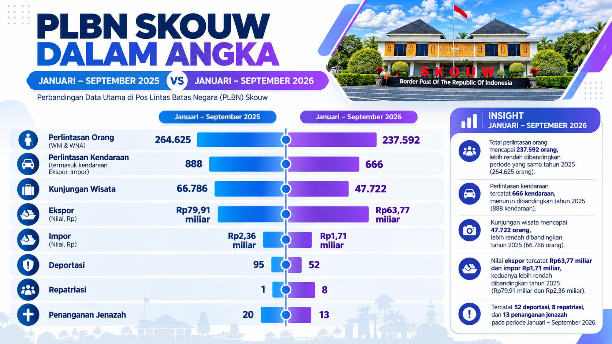

<!doctype html><html lang="id"><meta charset="utf-8"><meta name="viewport" content="width=device-width,initial-scale=1"><title>PLBN Skouw dalam Angka — Januari–Desember 2025 vs Januari–September 2026</title><style>body{margin:0;background:#fff}figure{position:relative;margin:0}img{display:block;width:100%;height:auto}</style><figure><svg xmlns="http://www.w3.org/2000/svg" viewBox="0 0 1672 940" aria-hidden="true" style="position:absolute;inset:0;width:100%;height:100%;pointer-events:none"><defs><linearGradient id="period-top"><stop stop-color="#066cdb"/><stop offset="1" stop-color="#137fef"/></linearGradient><linearGradient id="period-chart"><stop stop-color="#008af5"/><stop offset="1" stop-color="#086bf5"/></linearGradient></defs><rect x="99" y="201" width="344" height="35" rx="4" fill="url(#period-top)"/><text x="270" y="228" text-anchor="middle" fill="white" font-family="Arial,sans-serif" font-size="24" font-weight="700">JANUARI – DESEMBER 2025</text><rect x="466" y="307" width="266" height="25" fill="url(#period-chart)"/><text x="597" y="327" text-anchor="middle" fill="white" font-family="Arial,sans-serif" font-size="20" font-weight="700">Januari – Desember 2025</text><rect x="1334" y="437" width="282" height="42" fill="white"/><text x="1338" y="455" fill="#091e60" font-family="Arial,sans-serif" font-size="17">Januari–Desember 2025<tspan x="1338" dy="21">(264.625 orang).</tspan></text></svg></figure></html>